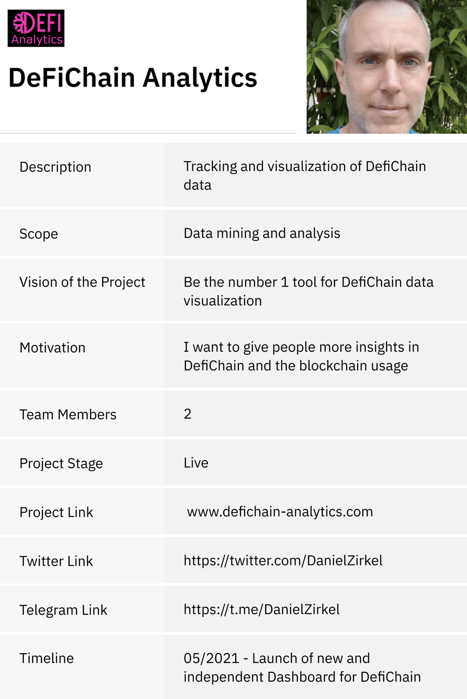
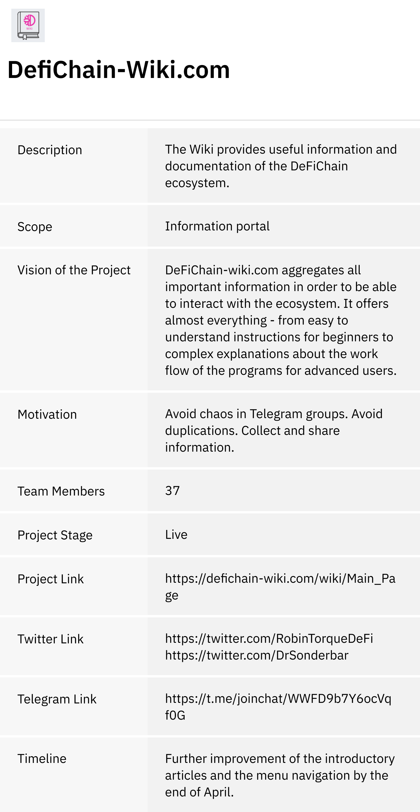
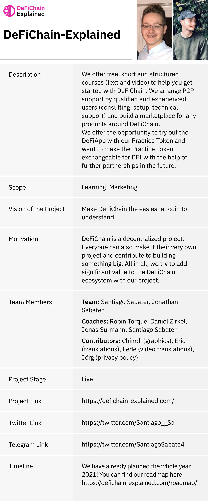

Community Projects
2021-05-28

What would DeFiChain be today without a strong and forward thinking community – one determined to further push the decentralization efforts in order to become the number one DeFi protocol for financial applications. Back in Q1 we outlined our ambitions to convince more external developers to build their own dApps and programs on top of the DeFiChain blockchain by encouraging them to apply for funding via the community development fund.
This fund, holding a bit more than 14m DFI and continually growing with each block, is reserved for community purposes only. Its sole objective is to incentivize developers and the greater DeFiChain community to participate in activities that are beneficial and supportive to DeFiChain’s long term goals.
The following projects were the first to be successfully funded by the community development fund. These projects should not go unnoticed, because they offer considerable value to the community. If you are now also interested in starting a project in the DeFiChain ecosystem, please consider submitting a proposal too. If you’d like to know more about it, then feel free to interact with our active community on Telegram or Reddit.





Original: https://blog.defichain.com/2021/05/community-projects.html